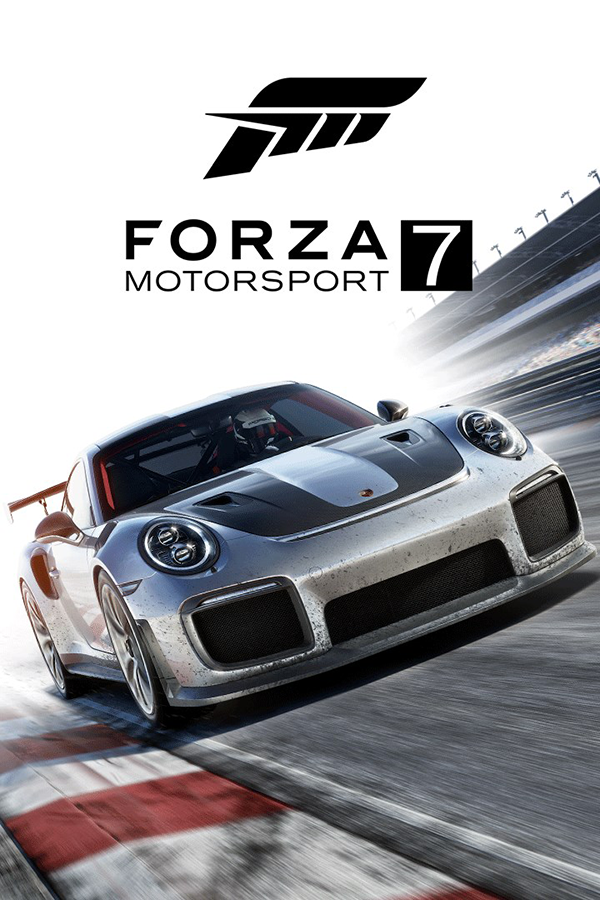

Forza Motorsport 7
Forza Motorsport 7
Details
|  | |
| Playtime | Not Played |
| Last Activity | Never |
| Added | 5/1/2025 23:17:59 |
| Modified | 5/1/2025 23:20:07 |
| Completion Status | Not Played |
| Library | Playnite |
| Source | Steam |
| Platform | $PC (Windows) |
| Release Date | 10/3/2017 |
| Community Score | |
| Critic Score | 85 |
| User Score | |
| Genre | Racing |
| Developer | Turn 10 Studios |
| Publisher | Microsoft Studios |
| Feature | Controller Support Full Controller Support HDR Multiplayer |
| Links | PCGamingWiki IGDB MobyGames Wikipedia |
| Tag | ForzaTech |
Description
Forza Motorsport 7 is a 2017 racing video game developed by Turn 10 Studios and published by Microsoft Studios, serving as the tenth installment in the Forza series. It was released on Windows 10 and the Xbox One family of consoles on October 3, 2017, with early access to players who pre-ordered the game's Ultimate and Deluxe editions. It was succeeded by Forza Motorsport, the eighth in the Motorsport series, on October 10, 2023.
Gameplay
Forza Motorsport 7 is a racing video game featuring over 700 cars—including new Forza Edition cars, most of which have been brought over from Forza Horizon 3 and more than 200 different configurations to race on across 32 locations at launch, including all from Forza Motorsport 6; a fictional street circuit in Dubai is one of the new circuits and several tracks returning from Forza Motorsport 4 including Maple Valley Raceway, Mugello Circuit and Suzuka Circuit. Two features that are new to the Motorsport title include dynamic weather (previously seen in Horizon titles) and customizable drivers.
Development and release
Forza Motorsport 7 was developed by Turn 10 Studios alongside the Xbox One X console, with Turn 10 providing the Xbox hardware team with feedback. In mid-January 2017, the Xbox hardware team supplied Turn 10 with a prototype Xbox One X system. Turn 10 was able to get their ForzaTech demo running on the system within two days after receiving the prototype console. The game runs at 4K resolution and 60 frames per second, while running at 1080p at similar frame rate on the base Xbox One models.
The game does not feature any Toyota and Lexus production road vehicles due to licensing issues between the manufacturer and most non-Japanese video game developers that started in 2017. Only the company's selected race and pre customized vehicles, including the Camry's NASCAR configurations, Eagle MkIII, the Arctic Trucks Hilux AT38, Toyota T100 SR5 Trophy Trucks and the Subaru BRZ are featured, then Land Cruiser Prado AT37 Arctic Trucks featured via DLC. However, Volkswagen returns after being absent in Horizon 3, with some cars being brought over from Horizon 2 and Motorsport 6, as well as some new inclusions.
Forza Motorsport 7 was announced at Microsoft's press conference during E3 2017 on June 11. The 2018 Porsche 911 GT2 RS was revealed alongside the game as part of a six-year licensing deal between Microsoft and car manufacturer Porsche. The game launched simultaneously on Windows 10 and Xbox One, and is slated to be available at launch for the Xbox One X. However, the OneDrive music support will be announced 'at a later date'. The first monthly car pack called the "Samsung QLED TV Forza Motorsport 7 Car Pack", was released on November 7, 2017. That DLC includes one more Toyota vehicle, the Arctic Trucks Land Cruiser.
The game was delisted from purchase and Xbox Game Pass on September 15, 2021, due to expiring licenses.
Reception
Forza Motorsport 7 received "generally favorable" reviews, according to review aggregator website Metacritic. In Game Informer's Reader's Choice Best of 2017 Awards, the game took the lead for "Best Racing Game", while it tied in third place with Slime Rancher for "Best Microsoft Game". It won the award for "Best Racing Game" in IGN's Best of 2017 Awards, whereas its other nominations were for "Best Xbox One Game" and "Best Graphics".
"Slightly above average or simply inoffensive. Fans of the genre should enjoy it a bit, but a fair few will be left unfulfilled," was Peter Glagowski's conclusion on Destructoid with a score of 7/10. 7.5/10 was Ray Carsillo's score on Electronic Gaming Monthly; he said, "Forza Motorsport 7 is a really great racing game—it’s just a shame that changes to the game’s currency system undermine a fair amount of what it does right. It’s made racing feel more like a grind than in years past and no amount of new tracks or cars will change that." Justin Towell from GamesRadar gave the game a score of 5 out of 5 stars saying that "Forza Motorsport 7 addresses every issue of its predecessor, turns the visual flair up to 11 and handles like a dream. An essential purchase."
Luke Reilly said on IGN "Forza Motorsport 7 is Turn 10's finest love letter to speed and style this generation". James Davenport of PC Gamer stated, "Light performance problems and a poor loot box system can't quite distract from Forza Motorsport 7's accommodating difficulty, stunning beauty, and lavish racing options." Colin Campbell of Polygon said that "This is a game for everyone who loves racing. It offers every helping hand to those who want to just throw themselves around bends, while allowing die-hards to tinker with their rides, and really feel like they are there."